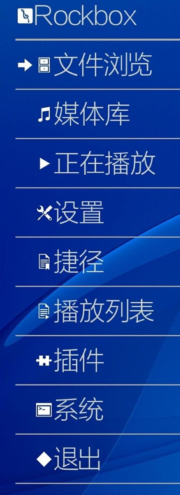
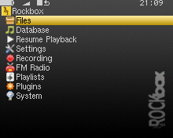

Rockbox 为什么能在 160MHz 的 iPod 上跑 Doom？
一个存活了二十多年的开源固件项目，在硬件极端受限的 DAP 上榨出了不可思议的能力。我从它的 bare-metal 架构、SDL 运行时和引导器机制三个角度，拆解这套系统设计背后的技术取舍。
为什么一个 160MHz 的 MP3 播放器能跑 Doom？
我第一次看到 Rockbox 跑 Doom 的时候，第一反应是：这不可能。
iPod Classic 的处理器是 PortalPlayer PP5022，ARMv4T 架构，主频 160MHz。2007 年有人在这台机器上跑出了 1993 年的经典 FPS 游戏 Doom——35 到 45 FPS，流畅可玩。要知道当年 Doom 发布时推荐的最低配置是 386DX-33，iPod 的 160MHz ARM 理论算力并不比那台古董 PC 高多少。
更不可思议的是：这件事不是一次性的 hack。Doom、Quake、Duke Nukem 3D、Wolfenstein 3D 四款游戏全部移植成功，而且 Rockbox 社区把这做成了内置功能——你只要把 WAD 文件扔对目录就能跑。这套系统现在还在活跃维护，Rockbox官网上能看到它支持的全部设备列表和每日构建。我后来去Rockbox文档翻了一下才弄明白，这背后是一套完整的系统级设计，不是游戏移植本身的功劳。

Bare-metal vs Hosted：两种架构的根本分野
Rockbox 最核心的设计决策，是它在传统 DAP 上选择了 bare-metal 运行模式——直接跑在硬件上，没有任何操作系统中间层。
这和你手机上的 App、复古掌机上的 Rockbox 端口完全不同。在 RG35XX 这种复古掌机上，Rockbox 是一个跑在原生 Linux 系统上的应用程序，Linux 负责初始化声卡、屏幕、按键，Rockbox 通过 ALSA 驱动和硬件交互。这条链路多了一层抽象，好处是稳定、驱动成熟，代价是延迟增加、Rockbox 无法直接控制硬件的所有能力。
而在 iPod、Sansa Clip 这种传统 DAP 上，Rockbox 是系统本身。它完全接管了硬件——音频编解码芯片、LCD 屏、按键、USB、电源管理，全部由 Rockbox 自己写的驱动控制。原厂固件被挤到了引导器的"备胎"位置，开机时你可以选择进 Rockbox 还是回原厂。
这个架构选择解释了三件事：
第一，为什么性能能榨到极致。 没有操作系统的调度开销，Rockbox 可以把 160MHz 的 ARM 跑满。音频解码时 CPU 几乎全部留给解码算法，UI 渲染只占极薄的一层。这就是为什么 iPod Classic 上能同时跑无损解码 + 显示专辑封面 + 跑 Doom——每一个 cycles 都精打细算。
第二，为什么复古掌机上的端口几乎全是 Unstable。 bare-metal 端口需要为每一台 DAP 单独写驱动，iPod 和 Sansa 之所以有 Stable 端口，是因为社区花了好几年把每一个硬件细节都啃透了。而复古掌机端口走的是 hosted 路线，依赖原生 Linux 的驱动，但 Linux 驱动在掌机上可能还没调顺，Rockbox 自己也无法绕过，所以稳定性受限于上游。
第三，为什么刷机变砖的案例极其罕见。 bare-metal 设计要求 Rockbox 的引导器写得极其保守——它只负责做一件事：加载 .rockbox 目录下的固件，这个固件包就是你刷机时要解压到根目录的东西，从Rockbox下载拿 Daily Build 或 Stable 版本都行。固件损坏了？引导器照样能把你送回原厂固件。硬件引导扇区几乎不会被 Rockbox 写坏，因为它根本不碰那片 Flash。社区二十多年历史里，真正需要 JTAG 焊接抢救的 brick 案例加起来也没几例。
SDL 运行时：让游戏移植成为可能的那层胶水
但 bare-metal 架构还不足以解释 Doom 为什么能跑。iPod 上没有图形库、没有输入框架、没有音频 API——Doom 需要什么？它需要一个能画像素、能读取按键、能播放音效的底层。
Rockbox 自己实现了一套 SDL 兼容层。SDL（Simple DirectMedia Layer）是跨平台游戏的标准底层库，大多数经典游戏都用它。Rockbox 的实现把 SDL 的调用映射到 bare-metal 的硬件驱动上：SDL_SetVideoMode → 初始化 LCD 并直接写帧缓冲，SDL_PollEvent → 扫描按键状态，SDL_OpenAudio → 配置音频编解码芯片并喂数据。
这层胶水的聪明之处在于：它不是完整的 SDL 实现，而是刚好够用的子集。Doom、Quake 这些经典游戏对 SDL 的使用范围很窄——2D 帧缓冲、8 位音频、轮询式输入——Rockbox 只实现了这部分，代码量可控，性能也不会被冗余功能拖垮。
iPod Classic 的 PortalPlayer 处理器虽然主频只有 160MHz，但它有个被大多数人忽略的优势：带硬件定点乘法器。Doom 的渲染管线大量依赖矩阵乘法和固定点运算，这颗 160MHz 的 ARM 在定点运算上的实际吞吐率，比某些早期 400MHz 的通用处理器还快。Rockbox 的 SDL 层直接用了这个硬件特性，把光栅化和纹理映射的关键路径都改成了定点计算。
Backdrop 为什么不自动缩放：一个关于功耗的决策
我在翻 Backdrop 背景图文档时看到一个细节：Rockbox 不会自动缩放背景图片——图片尺寸必须精确匹配 DAP 屏幕分辨率，否则显示错位。
初看觉得这是个粗糙的设计。哪个现代 App 不会自动缩放？但想想 iPod 那个 1400mAh 的电池、160MHz 的处理器，这个决策突然就合理了。JPEG 解码本身已经在吃 CPU，如果每张背景图还要做一次双线性插值缩放，那每次切换主题或开机时都会卡一下，而且待机功耗会明显升高。Rockbox 的逻辑是：主题作者应该为每个 DAP 做适配，用户自己放的背景图也麻烦你提前裁好——把 CPU 留给音乐解码和游戏渲染。
这种"把 CPU 留给核心任务"的思路贯穿了整个系统。Rockbox 不开后台守护进程、不主动扫描目录、不做在线检查——默认配置下，它开机后唯一持续运行的就是音频解码管线和按键扫描，其余全部按需触发。
取舍：bare-metal 的代价是什么
说了这么多好处，这套设计的代价也很明确。
硬件兼容性窄。 bare-metal 意味着每台 DAP 都是独立的移植目标。Rockbox 支持的设备只有几十款，而且新款 DAP 几乎不会被支持——现代智能手机和平板走的是 ARM64 + Linux/Android 路线，Rockbox 的 bare-metal 设计在上面没有意义。
Stable 端口稀缺。 社区维护 Stable 版本的只有 iPod Classic、Sansa Clip Zip、Cowon D2 等寥寥几款，而且都是已经停产多年的设备。想要新硬件跑 Rockbox，要么接受 Unstable 的日常崩溃，要么自己当移植作者。
复古掌机上体验打折扣。 Hosted 模式下音频多了一层 ALSA 驱动，延迟会增加几毫秒；硬件功能受限于原生系统初始化——录音、S/PDIF、IR 遥控这些功能在复古掌机端口上要么缺失要么不稳定。
这套原理意味着什么
Rockbox 适合两类人：一类是手里躺着一台停产 DAP 的折腾党，想让 iPod Classic 焕发第二春；另一类是对嵌入式系统好奇的开发者，想看看在资源极端受限的情况下一套系统能榨出多少东西。对他们来说，Rockbox 不是"一个更好的播放器固件"，而是一个活的嵌入式教学案例。
但如果你是普通用户，想用一台设备同时搞定无损播放、游戏模拟器、视频和 WiFi——那还是老老实实买复古掌机用原生系统吧。Rockbox 的 hosted 端口在那里能跑，但它定位就是"顺便用的"，不是替代。
至于我自己？我把一台闲置的 iPod Classic 刷了 Rockbox，每天通勤时用它听无损、偶尔跑两关 Doom。Click Wheel 控制角色转向确实不如鼠标顺手，但在 160MHz 的 ARM 上能玩 Doom 本身，就是一种让人着迷的体验。

资料位置
这套 Rockbox 的中文资料我同步维护在三个仓库——GitHub 是主仓库，Gitee 做了国内镜像方便加速，GitCode 还有一份备份以防哪个仓库抽风。